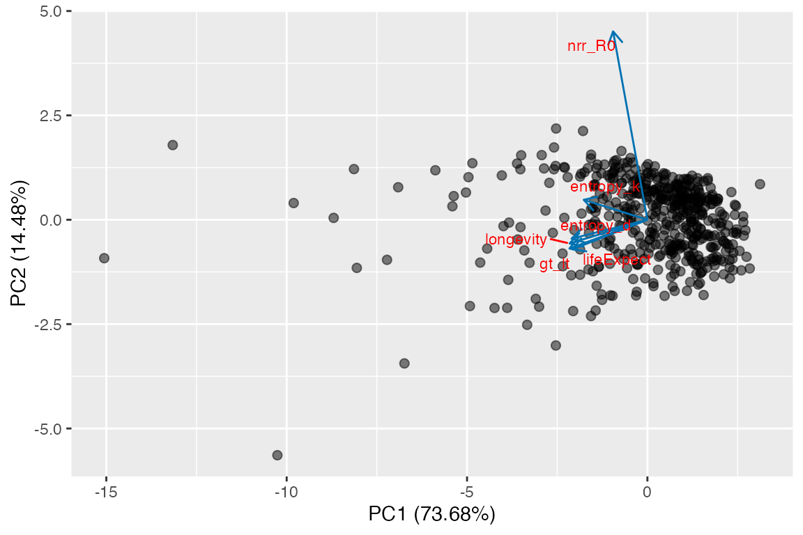

Introduction
Several interesting analyses have used MPMs from many species to
explore life history strategies using principal components analysis
(PCA). A potential criticism of these studies is that the underlying
data are biased towards certain taxa, life histories, and biomes. It is
unclear how much this bias could influence observed patterns. It would
therefore be useful to simulate realistic MPMs to explore the potential
artefactual patterns that could emerge from biased data. Here I show how
mpmsim can help with this task and enable the exploration
of PCA space as an aid to understanding life history strategies.
Simulating data for a PCA
Load the required packages
First use generate_mpm_set() to simulate 50 matrices
with the archetype 1 life history from Takada et al. (2018). This life
history archetype is one where transition from/to any stage is possible
and where individuals can progress and retrogress rapidly. After
simulating the matrices they can be placed into a
CompadreDB object using cdb_build_cdb().
set.seed(42)
constrain_df <- data.frame(fun = "lambda", arg = NA, lower = 0.9, upper = 1.1)
mpm_set <- generate_mpm_set(
n = 50, n_stages = 3, fecundity = c(0, 6, 6), archetype = 1, split = TRUE,
max_surv = 0.95, constraint = constrain_df
)
sim_life_hist_1 <- cdb_build_cdb(mat_u = mpm_set$U_list, mat_f = mpm_set$F_list)
#> Warning in cdb_build_cdb(mat_u = mpm_set$U_list, mat_f = mpm_set$F_list): Metadata does not include a `SpeciesAccepted` column, so number
#> of species not provided when viewing object.Some of these matrices will be reducible, which leads to analytical
problems with some calculations. These can be filtered out using
cdb_flag() followed by filter().
sim_life_hist_1 <- cdb_flag(sim_life_hist_1, checks = "check_irreducible") %>%
filter(check_irreducible == TRUE)For convenience, these matrices can be added to the
compadreDB object like this, and turned into a regular data
frame (tibble) like this.
# Put the matrices into the metadata
sim_life_hist_1$matA <- matA(sim_life_hist_1)
sim_life_hist_1$matU <- matU(sim_life_hist_1)
sim_life_hist_1$matF <- matF(sim_life_hist_1)
# Use cdb_metadata to turn this into a data frame
sim_life_hist_1 <- cdb_metadata(sim_life_hist_1)Before proceeding with the calculation of life history traits I make
a new function, gt_lt, to calculate generation time from a
life table.
# New functions to calculate generation time from life table.
# Function to calculate generation time from the life table
gt_lt <- function(matU, matF, start = 1, ...) {
tempLT <- mpm_to_table(matU, matF, start = start, ...)
return(sum(tempLT$x * tempLT$lxmx) / sum(tempLT$lxmx))
}Now we can use a combination of sapply and
mapply to calculate the life history traits for each matrix
model.
sim_life_hist_1$gt_lt <- mapply(gt_lt, sim_life_hist_1$matU,
sim_life_hist_1$matF)
sim_life_hist_1$longevity <- sapply(sim_life_hist_1$matU,
Rage::longevity,
x_max = 1000, lx_crit = 0.01
)
sim_life_hist_1$lifeExpect <- sapply(sim_life_hist_1$matU,
Rage::life_expect_mean)
sim_life_hist_1$entropy_d <- mapply(entropy_d,
sim_life_hist_1$matU,
sim_life_hist_1$matF)
sim_life_hist_1$entropy_k <- mapply(entropy_k, sim_life_hist_1$matU)
sim_life_hist_1$nrr_R0 <- mapply(
net_repro_rate, sim_life_hist_1$matU,
sim_life_hist_1$matF
)Now we have added these variables to the data set we can extract them into a dataset for the PCA.
pcData <- sim_life_hist_1 %>%
select(gt_lt, longevity, lifeExpect, entropy_d, entropy_k, nrr_R0) %>%
na.omit()Then we can run the PCA, and add the first two principle components to the data frame for plotting purposes.
PCA <- prcomp(pcData, scale = TRUE, center = TRUE)
# Add the PC data to the raw data.
pcData <- pcData %>%
cbind(PCA$x[, 1:2])The plot can be made using autoplot, from the
ggfortify package.
PCA_plot <- autoplot(
object = PCA, alpha = 0, size = 4, fill = "#55616D60",
loadings.colour = "#0072B2", shape = 16,
loadings = TRUE, loadings.label = TRUE, loadings.label.colour = "red",
loadings.label.size = 3, loadings.label.repel = TRUE,
frame = FALSE, frame.type = "norm", scale = 0
)
PCA_plot$layers <- c(
geom_point(
aes_(
x = pcData$PC1,
y = pcData$PC2
),
size = 2, alpha = 0.5
),
PCA_plot$layers
)
PCA_plot
The PCA loadings show two strong axes. One with evolutionary entropy, longevity, generation time and life expectancy aligned, and one with R0 on its own. Life table entropy is aligned more or less equally with both. This is a rather different pattern than can be observed with real data. Why?